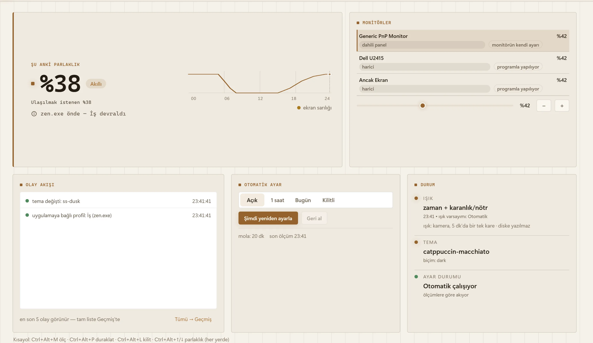
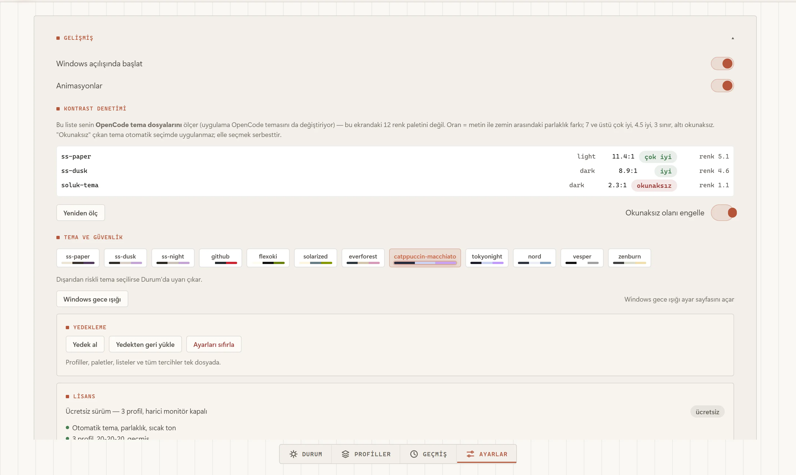
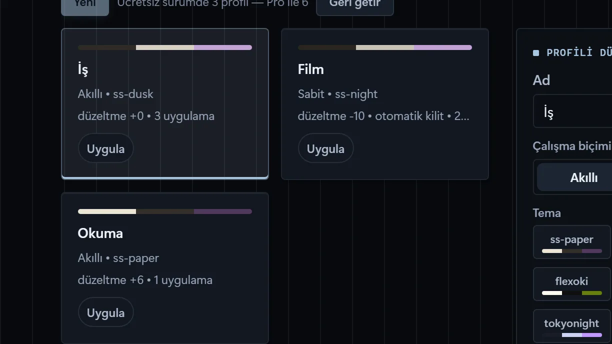
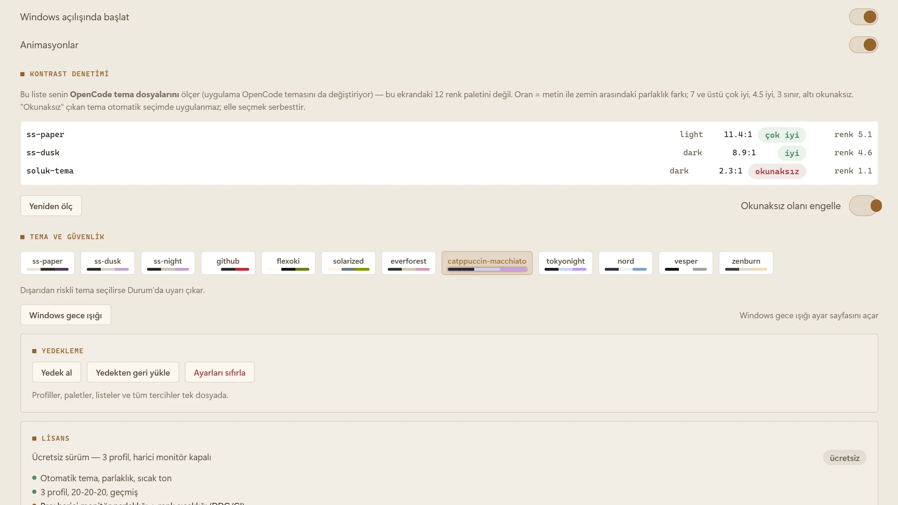
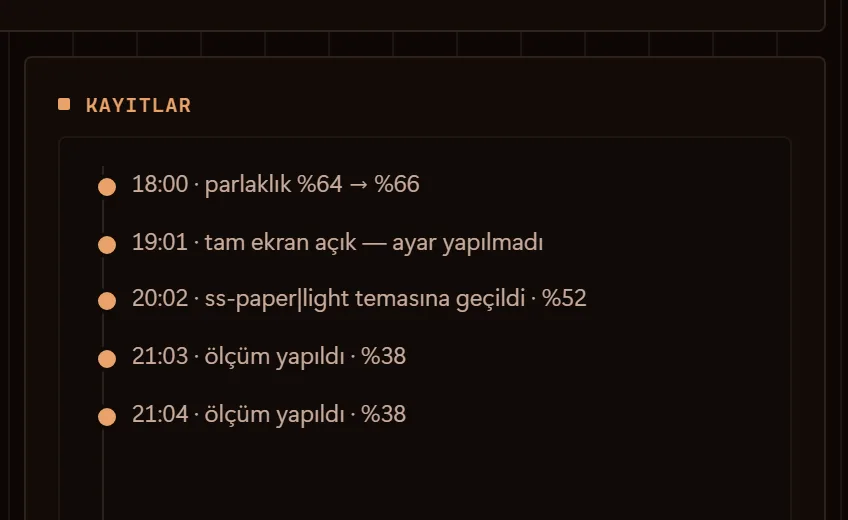

When the room goes dark, the screen should too.
The camera measures ambient light. Brightness and warmth follow that reading, so a white page at midnight does not stab your eyes.
- Camera frames are never written to disk
- No account
- No telemetry
- GPL-3.0

The status screen. The warmth curve runs across the day; brightness sits on the left.
- now
- 21:04
- warmth
- %55
- color temperature
- 4600 K
What changes across the day
The same day at four hours. Values are computed with default settings.
-
As the curtain opens
Low light keeps brightness low. Warmth strength reaches 39%; the screen starts soft.
-
Daylight
The curve drops to zero and warmth switches off. Colors stay at 6500 K while brightness nears its daytime ceiling.
-
The tone warms
Strength climbs to 27%. Colors shift warm without dimming the screen.
-
The night ceiling
The curve reaches 88% and the cap applies 62%. The screen stays dark but readable.
- night ceiling
- %62
- night color
- 4300 K
- idle return
- 3,5 sn
The screens themselves
These are not marketing renders. They are the app's own screens.








What it leaves alone
The rules always win; not even a bound profile can override them.
Touches
- With no pause and the screen on, it adjusts brightness.
- With warmth off, it does not touch color balance.
- If one monitor refuses DDC/CI, it skips that one and drives the others.
Leaves alone
- A game in the foreground freezes the tick.
- A video player in the foreground freezes the tick.
- Any other fullscreen app stops it.
- A PDF reader in the foreground freezes the tick.
- While the screen is locked, nothing is written.
Seven things it does
All in one tick, once a minute. No extra service, no extra process.
-
Reads the light with the camera
Each frame yields only average brightness and tone. If the camera is busy it falls back to the clock.
-
Day curve and night ceiling
Strength is computed from 11 anchor points. The peak is 88% at 23:00; the cap applies 62%.
-
Warmth
From 6500 K down to 3000 K in steps of 100 K. It shifts colors without dimming the screen.
-
Contrast gate
Theme files are measured with WCAG 2.1; a theme that measures unreadable is never applied automatically.
-
Profiles
Three in the free build, six with Pro. A profile can bind to an executable name.
-
External monitors
The internal panel is read over WMI, external displays over DDC/CI. Writing unlocks with a Pro license.
-
20-20-20 and idle return
One reminder, never repeated until you acknowledge it. Idle dims the screen; the return takes about 3.5 seconds.
What happens on install
- Installer
- NSIS setup, x64, per-user scope. No admin prompt.
- Signature
- No Authenticode signature. SmartScreen may warn about an unknown publisher; use "More info → Run anyway".
- Integrity
- Every release ships a .sha256 file; verify with Get-FileHash.
- Updates
- In-app. The package is signed with minisign and verified on download.
- Privacy
- Camera frames are not written and not uploaded. No telemetry, no account.
- Uninstall
- Color balance is restored first; turning warmth off also brings the calibration back.
Free and Pro
The free build is a working app, not a trial. Pro raises the profile count and opens external displays.
Free
- Brightness from light and time
- Automatic warmth and night ceiling
- OpenCode theme and Windows system theme
- Three profiles
- Contrast gate
- 20-20-20 reminder
Pro
- Six profiles
- External monitor brightness over DDC/CI
- Warmth on external monitors
- Apps bound to profiles and per-app themes
Pro pricing is not set yet. The "Get Pro" button currently opens the project page.
Questions
What does the camera see, and where does it go?
Each measurement reads a few frames and extracts only average brightness and tone. Nothing is written to disk or sent over the network. No frames are stored.
How much battery does it use?
A tick runs every minute and the camera opens at most every five minutes. The interval grows as the battery drops: below 30% it is 5 minutes, below 20% ten, below 10% twenty, below that thirty.
Why does brightness not work with HDR on?
Some monitors refuse DDC/CI brightness while HDR is on. The app says so in the error message; turning HDR off usually fixes it.
My external monitor is listed but does not change.
DDC/CI may be off in the monitor's own menu, or the cable may not carry it. In the free build writing is locked; reading and listing still work.
Does it change the screen while I play?
No. Games, video and PDFs in the foreground freeze the tick. A fullscreen app that is not on the keep-list also stops it.
How do I uninstall it?
Uninstall it from Windows settings. Color balance is restored before removal.
Is the app in English?
The app interface is currently Turkish only. This site is bilingual.
Install it, forget it.
The first tick runs at launch. After that it measures, decides and applies once a minute.